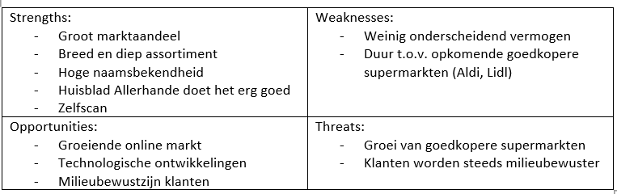
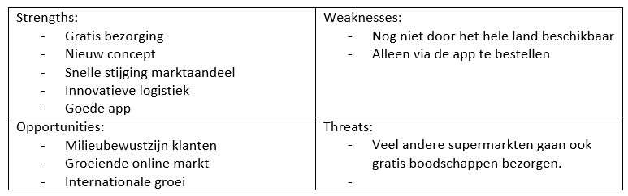

Smart Research: Smart of niet-smart? Welke organisatie doet het beter?
Geschreven door Mirja Vink
Vanuit de opleiding Finance and Control heb ik meerdere malen een bedrijfsvergelijking mogen maken. Allereerst deed ik dit vooral over concurrerende bedrijven, die in hun kern niet veel van elkaar verschilden, maar afgelopen jaar heb ik deze opdrachten specifiek gedaan over bedrijven waar mijn interesses liggen. Ik heb een bedrijfsvergelijking geschreven over ASN bank (een duurzame bank) en Rabobank (een normale bank). Ik ga voor deze minor een bedrijfsvergelijking maken tussen SMART en niet-SMART bedrijven. Hierbij wil ik gaan kijken of de volwassenheid van een bedrijf op het gebied van SMART industry impact heeft op de winstgevendheid van de organisatie.
Ik heb ik een vergelijking gemaakt tussen smart en niet-smart bedrijven. Dit heb ik gedaan om te kijken of de volwassenheid van een organisatie op het gebied van SMART industry een impact heeft op winstgevendheid van een organisatie.
De organisaties die ik wilde vergelijken zijn:
- Picnic: een SMART supermarkt. Picnic heeft een business model bedacht dat veel steunt op technologie. Picnic heeft een app ontwikkeld, waarmee de klant online de boodschappen kan bestellen. Dit wordt dan op een vast moment per week bezorgd. Daarnaast is Picnic bezig met het ontwikkelen van een grid voor order-picking robots.
-
Albert Heijn: een normale supermarkt. Een van de grootste spelers in het supermarkt segment.
Business vergelijking
De missie van Picnic: “Boodschappen doen eenvoudiger, leuker en betaalbaar te maken voor iedereen.” (Picnic, sd)
De missie van Albert heijn: “Altijd waar voor je geld, beter eten en gemak voor jou.” (Over albert Heijn , sd)
Het was alleen niet mogelijk om van picnic de financiële cijfers te achterhalen. Daarom heb ik van de Albert Heijn en Picnic beide een SWOT analyse opgesteld en ga ik twee andere bedrijven op financieel gebied vergelijken.

Figuur 1: SWOT Albert HeijnIn deze SWOT analyse vallen de sterktes, zwaktes, kansen en bedreigingen van de Albert Heijn te zien.

Figuur 2: SWOT PicnicIn deze SWOT analyse vallen de sterktes, zwaktes, kansen en bedreigingen van Picnic te zien.
Financiële vergelijking
Voor de financiële vergelijking heb ik twee autofabrikanten gepakt:
- Tesla: Tesla, Inc. ontwerpt, ontwikkelt, produceert en verkoopt elektrische voertuigen en ontwerpt, produceert, installeert en verkoopt producten voor de opwekking en opslag van zonne-energie. De segmenten van de onderneming omvatten de automobielsector en de opwekking en opslag van energie (Tesla, sd).
- Volkswagen: Volkswagen AG is een in Duitsland gevestigde onderneming die voertuigen produceert en verkoopt. Zij is actief in vier segmenten: Passenger Cars, Commerciële voertuigen, Power Engineering en Financial Services (Volkswagen, sd).